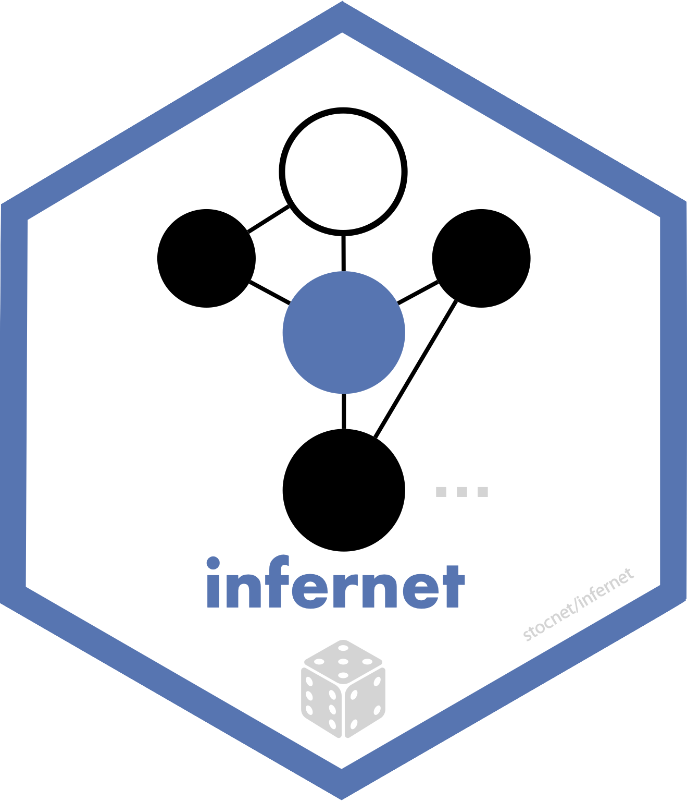

About the package
infernet is the inferential layer of the stocnet ecosystem. It offers two things:
-
Tests of network statistics.
test_random()runs a conditional uniform graph (CUG) test,test_configuration()conditions on the degree sequence, andtest_permutation()runs a quadratic assignment procedure (QAP) test. Each takes any graph-level statistic and compares it against a simulated null distribution. -
Network regression.
net_regression()fits a multiple regression quadratic assignment procedure (MRQAP) model, using either Dekker et al’s double semi-partialling or a permutation of the dependent network alone.
It offers these capabilities for one-mode and two-mode networks, and for unimodal, directed, undirected, weighted, or cognitive social structure networks alike. It accepts matrices, edgelists, igraph, network, tidygraph, or stocnet objects, and handles missing-data gracefully. It can run permutations in parallel, and can optionally use a GPU via torch.
A formula you can reuse
Models are specified with a formula, so the same specification can be moved between networks and between model types:
library(infernet)
networkers <- manynet::ison_networkers |>
manynet::to_subgraph(Discipline == "Sociology")
net_regression(weight ~ ego(Citations) + alter(Citations) + sim(Citations),
networkers, times = 200)Alongside plain references to other networks, which enter as dyadic covariates, the right-hand side accepts:
| Term | Constructs a matrix of |
|---|---|
ego(attr) |
the sender’s value of a nodal attribute |
alter(attr) |
the receiver’s value |
same(attr) |
1 where sender and receiver share an attribute value |
dist(attr) |
the absolute difference in a numeric attribute |
sim(attr) |
the proportional similarity in a numeric attribute |
tertius(attr, fn) |
an aggregate of an attribute over a node’s other ties |
Further options are passed through a control list: the model family, the null hypothesis, random or fixed effects, robust standard errors, the parallel strategy, and an optional torch path for running permutations on a GPU.
Installation
Development
infernet is not yet on CRAN. The latest binary releases for all major OSes – Windows, Mac, and Linux – can be found here. Download the appropriate binary for your operating system, and install using an adapted version of the following commands:
- For Windows:
install.packages("~/Downloads/infernet_winOS.zip", repos = NULL) - For Mac:
install.packages("~/Downloads/infernet_macOS.tgz", repos = NULL) - For Unix:
install.packages("~/Downloads/infernet_linuxOS.tar.gz", repos = NULL)
To install from source, please install the remotes package from CRAN and then:
- For latest stable version:
remotes::install_github("stocnet/infernet") - For latest development version:
remotes::install_github("stocnet/infernet@develop")
Funding details
Development on this package has been funded by the Swiss National Science Foundation (SNSF) Grant Number 188976: “Power and Networks and the Rate of Change in Institutional Complexes” (PANARCHIC).